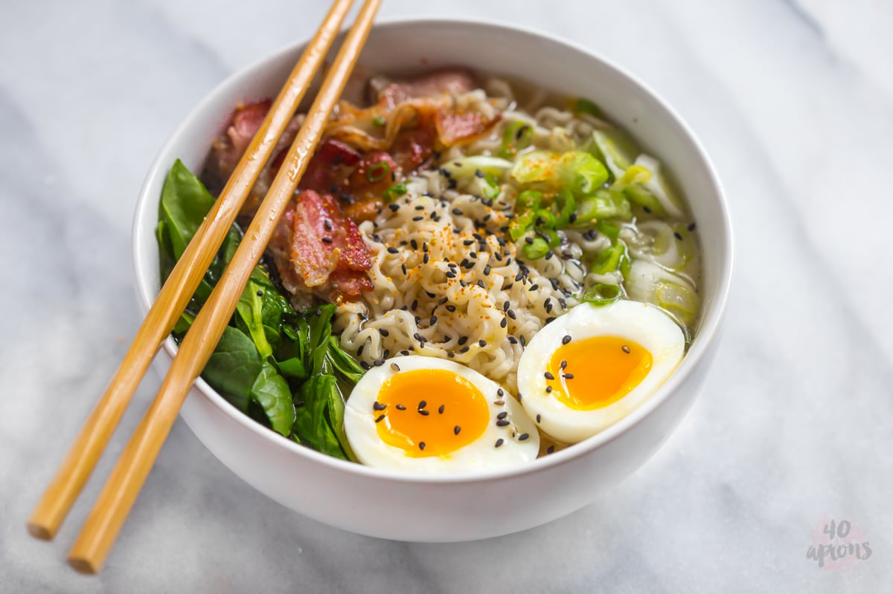

Top-rated Asian Ramen in Utah County
restaurant that is not only just good, we started to help bring the quality that you’d normally get in downtown Salt Lake City, a little closer to home. Our ocean-fresh fish, and tantalizing fusion recipes will put you at the edge of your seat. Come on down and give us a try! We are open 7 days a week! Mon – Sat | 5:00pm – 10:00pm Sun | 5:00pm – 9:00pmtest
Portions. Portions are "American" sized, and the menu has a lots of traditional Asian offerings. Let us host your private event, family reunion, anniversary party and business dinner.Great ramen, great price, great service.
Private Dining. We would love to host your special event in one of our restaurant's private rooms or terrace.
Learn MoreOrganic Ingredients.We offer freshest ingredients and our ramen is made from scratch.
Learn MoreConvinient location. Great location just by central street.
Find usShio (She-Oh). This means means salt and this is traditionally the way Ramen soup is flavoured. All Western broths would be considered of the Shio type. The salt doesn’t affect the appearance of the broth and therefore Shio soup tends to light coloured and clear. Shio flavoured soup will tend to be a tad saltier than the other types. Learn More
Shoyu (Show-You) means soy sauce and this is next oldest flavour type. Instead of salt, a sauce made by fermenting soya beans is used to make the broth salty. This sauce is not your regular table soya sauce, but typically a special sauce with additional ingredients made according to a secret recipe. The broth for Shoyu is the only type that tends not to contain pork. Shoyu soup is also usually clear, but is dark coloured and sweeter than Shio soup. Learn More
Miso (Me-So) In more recent times, Miso paste has also been used to give Ramen broth its savoury taste. If Miso is used, it is immediately obvious as the soup will be opaque. Shio or Shoyu flavoured soups merely accent the flavour of underlying broth, while miso leaves a fuller complex taste in the mouth since it also has a strong taste of its own. Learn More
Tonkotsu (Tong-Coats-Zoo) is technically not a true flavour since it is contains either salt or soy sauce. It is made from boiling ground up pork bones (ton=pig, kotsu = bones) for 12-15 hours till all the collagen has dissolved into the stock as gelatine (details here). The result is a rich whitish soup that is distinct enough to consider Tonkotsu as a separate fourth flavour of Ramen. To be clear, the use of pork bones does not automatically mean the soup is of the Tonkotsu type. If the pork bones are boiled whole for a relatively shorter period, the result is just regular pork broth. Learn More